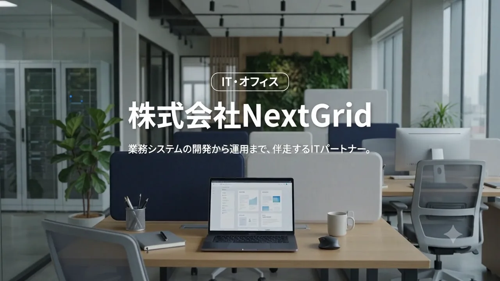
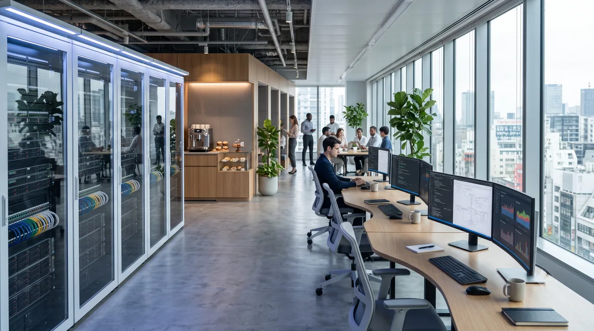
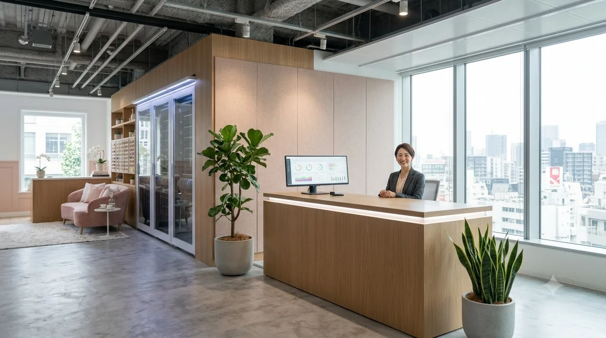

LAYER 01 — SURFACEIT・オフィス / FUKUOKA
株式会社 NextGrid
業務システムの開発から運用まで、
伴走するITパートナー。
このサイトは3つの層でできています。上の層ほど概要、下の層ほど詳細。まずはいちばん上の層、表層からどうぞ。
全体像をつかむ層

NEXTGRID OFFICE — FUKUOKA
少人数精鋭で、決めて、つくる。
ABOUT少人数精鋭のチームだからこそ、意思決定はスピーディーに、要件のすり合わせはきめ細かく。無駄な工程を省き、本当に必要な機能に集中して開発を進めます。
業務システムの新規開発からWebサイト・Webアプリの制作、既存システムの改善まで、企業の"ちょうどいいIT"を一緒に形にしていきます。
見えている画面の下には、いつも仕組みと基盤がある。
私たちが向き合うのは、画面だけではありません。その下でデータがどう流れ、リリースのあとどう運用されるのか。層をまたいで考えるほど、あとから効いてきます。
このサイトの見取り図
STRUCTURE MAP私たちの仕事は「表層・構造・基盤」の3層でできています。スクロールすると層が分かれ、それぞれのあいだにある支柱が見えてきます。3つの層は、このサイトの3つのページにそのまま対応しています。
NextGridの構成は3層です。上から順に、LAYER 01 表層（会社の考え方とサービスの概要）、LAYER 02 構造（サービスの内容と進め方の詳細）、LAYER 03 基盤（会社情報・チーム・お問い合わせ）。各層は支柱でつながっています。
- 層のなかのつながり
- 層と層をつなぐ支柱
6つのサービス
SERVICEつくる（BUILD）が3つ、ととのえる（TUNE）が3つ。ここでは名前と一行だけ。それぞれが業務のどの層まで届くのかは、LAYER 02 で詳しく見られます。
Webサイト制作
会社の"顔"となる、伝わるWebサイトを。
つくる / BUILD費用：要相談 S-02Webアプリ開発
業務にフィットする、使われ続けるアプリを。
つくる / BUILD費用：要相談 S-03システム開発
自社の業務に合わせた、オーダーメイドの仕組みを。
つくる / BUILD費用：要相談 S-04DXコンサルティング
何から始めるか、から一緒に整理します。
ととのえる / TUNE費用：要相談 S-05業務システム改善
使いにくさの原因を見つけ、丁寧に直す。
ととのえる / TUNE費用：要相談 S-06保守・運用サポート
リリース後も、安心して任せられる体制を。
ととのえる / TUNE費用：要相談費用はすべて要相談です。まずは今の状況をお聞かせください。
納品して終わりにしない。
PARTNERSHIP納品して終わりにはしません。リリース後の運用・保守まで見据えたご提案と、長くお付き合いできる伴走型のサポート体制を大切にしています。
層は、上から下へ降りるだけのものではありません。運用でわかったことは要件に戻り、また上の層から積み直されます。この折り返しがある前提で、最初の設計をしています。
運用（PHASE 04）で見えてきたことを、次の要件に戻します。図は進み方をイメージで表したものです。
オフィスの様子
OFFICE

オフィスの様子は、Instagramでも
INSTAGRAMふだんの仕事の様子は、Instagramにも少しずつ載せています。サイトに載せきれない、途中の状態が中心です。急ぎのご相談は、フォームかLINEのほうが早く届きます。
Instagram
開発フロアの朝。机の上と、ホワイトボードに残った書きかけの図を撮りました。
#オフィス
Instagram
打ち合わせスペースの棚を組み替えました。資料をしまう場所を決めるところから。
#オフィス#制作の様子
Instagram
画面の下書きを紙に描いてから、実物に起こしています。その途中を並べました。
#制作の様子#設計
SNSのリンク先はサンプルです。実在のアカウントではありません。掲載している投稿の文面も、サンプルとして作成したものです。